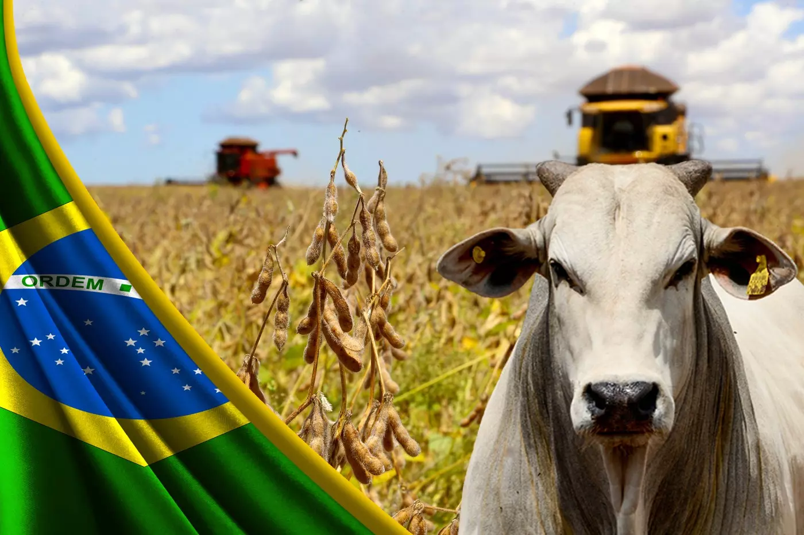
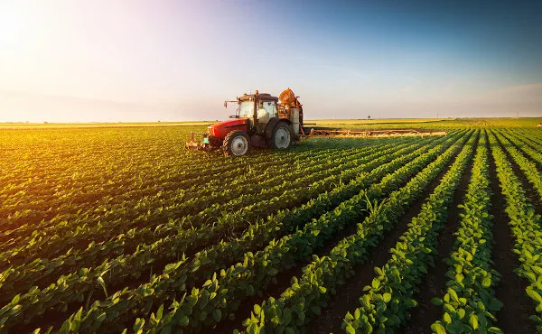

Evolução da agricultura e suas técnicas
A evolução da agricultura foi diretamente acompanhada da transformação do espaço geográfico e das técnicas que compõem as atividades humanas.
.png)
A prática da agricultura é uma das mais antigas atividades desenvolvidas pelos humanos. No Período Neolítico, a constituição das primeiras técnicas e materiais utilizados para o cultivo de plantas e confinamento de animais foi a principal causa para aquilo que se denominou como a sedentarização do ser humano, o que permitiu a sua moradia fixa em uma dada localidade, embora a coleta e a caça tenham convivido muito tempo lado a lado da agricultura.
A revolução agrícola
Um dos momentos mais importantes do processo de evolução da agricultura ao longo da história foi, sem dúvidas, aquilo que ficou conhecido como a Revolução Agrícola.
Podemos dizer que, com o passar do tempo, várias revoluções agrícolas sucederam-se, mas a principal delas ocorreu a partir da Revolução Industrial.
O processo de industrialização das sociedades permitiu a transformação do espaço geográfico no meio rural, o que ocorreu graças à inserção de maiores aparatos tecnológicos na produção agrícola, permitindo uma maior mecanização do campo. Essa transformação materializou-se a partir do fornecimento de insumos da indústria para a agricultura, tais como maquinários, fertilizantes e objetos técnicos em geral.
A Revolução Verde
No século XX, mais precisamente após a Segunda Guerra Mundial, a evolução da agricultura conheceu um de seus patamares mais importantes, o que ficou conhecido como Revolução Verde. Trata-se, basicamente, de um conjunto de medidas e promoção de técnicas baseado na introdução de melhorias genéticas nas plantas e na evolução dos aparatos de produção agrícola para ampliar, sobretudo, a produção de alimentos. 
A introdução das técnicas provenientes da revolução verde permitiu um aumento, em larga escala, da produção de grãos e cereais, diminuindo sensivelmente a necessidade por alimentos em várias regiões da Ásia, África e América Latina, muito embora a fome não tenha sido erradicada, uma vez que a sua existência não se deve somente à falta de alimentos. O impacto no mundo foi tão amplo que o agrônomo estadunidense Norman Borlaug, considerado o “pai” da Revolução Verde, foi agraciado com o Prêmio Nobel da Paz no ano de 1990.
Embora a Revolução Verde seja bastante criticada pelos seus impactos ambientais e também pelo processo de concentração de terras que acompanhou a sua evolução, é inegável a sua importância para o desenvolvimento da agricultura no mundo. Além do mais, como extensão, ampliaram-se nas décadas posteriores as melhorias decorrentes da tecnologia no campo, como a biotecnologia e a introdução dos Sistemas de Informações Geográficas na linha de produção agropecuária, o que vem intensificando a elevação da produtividade.